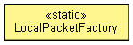

org.waarp.openr66.protocol.localhandler.packet
Class LocalPacketFactory
java.lang.Object
 org.waarp.openr66.protocol.localhandler.packet.LocalPacketFactory
org.waarp.openr66.protocol.localhandler.packet.LocalPacketFactory
public class LocalPacketFactory
- extends Object

Factory to create Packet according to type from a buffer
- Author:
- Frederic Bregier
| Methods inherited from class java.lang.Object |
clone, equals, finalize, getClass, hashCode, notify, notifyAll, toString, wait, wait, wait |
AUTHENTPACKET
public static final byte AUTHENTPACKET
- See Also:
- Constant Field Values
STARTUPPACKET
public static final byte STARTUPPACKET
- See Also:
- Constant Field Values
DATAPACKET
public static final byte DATAPACKET
- See Also:
- Constant Field Values
VALIDPACKET
public static final byte VALIDPACKET
- See Also:
- Constant Field Values
ERRORPACKET
public static final byte ERRORPACKET
- See Also:
- Constant Field Values
CONNECTERRORPACKET
public static final byte CONNECTERRORPACKET
- See Also:
- Constant Field Values
REQUESTPACKET
public static final byte REQUESTPACKET
- See Also:
- Constant Field Values
SHUTDOWNPACKET
public static final byte SHUTDOWNPACKET
- See Also:
- Constant Field Values
STOPPACKET
public static final byte STOPPACKET
- See Also:
- Constant Field Values
CANCELPACKET
public static final byte CANCELPACKET
- See Also:
- Constant Field Values
CONFEXPORTPACKET
public static final byte CONFEXPORTPACKET
- See Also:
- Constant Field Values
CONFIMPORTPACKET
public static final byte CONFIMPORTPACKET
- See Also:
- Constant Field Values
TESTPACKET
public static final byte TESTPACKET
- See Also:
- Constant Field Values
ENDTRANSFERPACKET
public static final byte ENDTRANSFERPACKET
- See Also:
- Constant Field Values
REQUESTUSERPACKET
public static final byte REQUESTUSERPACKET
- See Also:
- Constant Field Values
LOGPACKET
public static final byte LOGPACKET
- See Also:
- Constant Field Values
LOGPURGEPACKET
public static final byte LOGPURGEPACKET
- See Also:
- Constant Field Values
INFORMATIONPACKET
public static final byte INFORMATIONPACKET
- See Also:
- Constant Field Values
BANDWIDTHPACKET
public static final byte BANDWIDTHPACKET
- See Also:
- Constant Field Values
ENDREQUESTPACKET
public static final byte ENDREQUESTPACKET
- See Also:
- Constant Field Values
KEEPALIVEPACKET
public static final byte KEEPALIVEPACKET
- See Also:
- Constant Field Values
BUSINESSREQUESTPACKET
public static final byte BUSINESSREQUESTPACKET
- See Also:
- Constant Field Values
NOOPPACKET
public static final byte NOOPPACKET
- See Also:
- Constant Field Values
BLOCKREQUESTPACKET
public static final byte BLOCKREQUESTPACKET
- See Also:
- Constant Field Values
LocalPacketFactory
public LocalPacketFactory()
createPacketFromChannelBuffer
public static AbstractLocalPacket createPacketFromChannelBuffer(int headerLength,
int middleLength,
int endLength,
ChannelBuffer buf)
throws OpenR66ProtocolPacketException
- This method create a Packet from the ChannelBuffer.
- Parameters:
headerLength - length of the header from the current position of the buffermiddleLength - endLength - buf -
- Returns:
- the newly created Packet
- Throws:
OpenR66ProtocolPacketException
Copyright © 2009-2013 Waarp. All Rights Reserved.